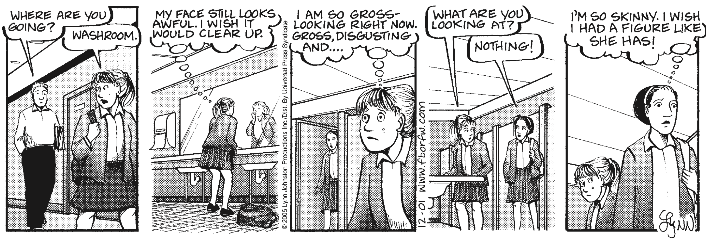

Figure 1. Too busy with yourself
-
Sensation that everybody is focused on us, because we overestimate the extent to which other people notice us.
Sensation that everybody is focused on us, because we overestimate the extent to which other people notice us.